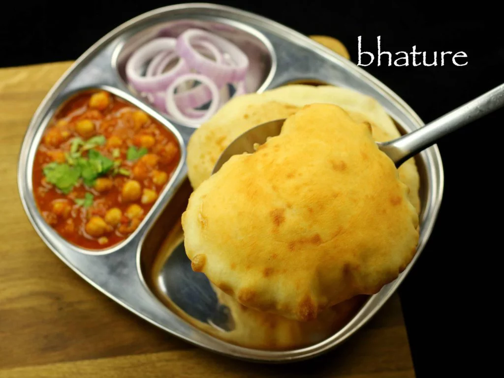

Bhature

Description
Bhature is basically a large poori served with chickpea curry, chole or channe. this is an exotic punjabi cuisine
delicacy, but very popular throughout india.
Ingredients
- 6 cups maida / all-purpose flour / plain flour
- 3 tbsp rava / semolina
- 3 tsp sugar
- salt to taste
- 1.5 tsp baking powder
- 0.75 tsp baking soda / cooking soda
- 6 tsp oil
- 3 cup curd / yogurt
Steps
- firstly, in a large mixing bowl take maida.
- to that add rava, sugar and salt.
- also add baking powder and baking soda and mix well.
- furthermore, add oil and rub with the flour.
- also add curd and start to knead dough.
- knead and punch the dough well for atleast 5 minutes.
- further, grease the dough with oil.
- cover with moist cloth and rest for atleast 2 hours.
- further, roll and get to a long shape. pinch the dough into medium sized balls.
- then make balls between your palms.
- finally, roll the dough evenly into circles using rolling pin. roll neither too thin nor thick.
- firstly, heat oil in a deep frying pan or kadai. when the oil is sufficiently hot, add one bhatura.
- and, press with the spoon to puff up.
- also once they begin to puff, splash oil over the bhatura till they puff completely.
- flip over and fry the bhatura till golden brown all over.
- then drain the poori into tissue paper to remove excess oil. fry all batura same way.
- finally, serve bhatura with chole curry.